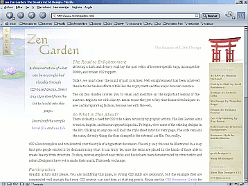

Recursos>>Sitios para aprender CSS


Este es uno de los sitios que no te puedes perder si quieres empezar por maravillarte con las creaciones de montones de autores, continuar aprendiendo de de lo que han hecho y ,para terminar, experimentar y participar con un diseño propio si te animas.
La idea es muy sencilla: hay un texto común y se puede jugar con él para distribuirlo por la superficie de la página y lograr una presentación diferente. No se puede añadir más texto pero sí se pueden modificar las imágenes y colores de la página.
De verdad, no te lo pierdas. www.csszengarden.com
Aunque lo cierto es que cuando quieres aprender lo que haces es leer un lenguaje común formado por las reglas de estilo, CSSZengarden puede tener una dificultad inicial porque el texto está escrito en inglés.
Si te resulta más familiar enfrentarte a un texto escrito en castellano puedes visitar otra interesante página basada en la misma idea que la anterior: un texto común que cuya presentación hay que modificar utilizando únicamente estilos. Lo encontrarás en www.camaleoncss.com (Tampoco deberías perdértelo)